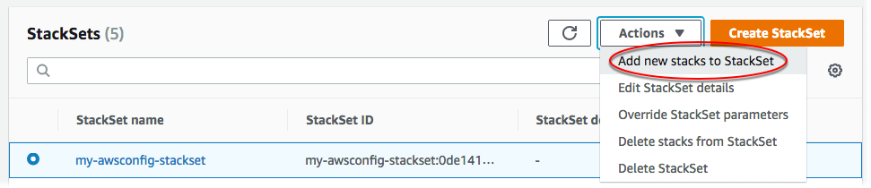

スタックをスタックセットに追加する
スタックセットの作成時に、スタックセットのスタックを作成できます。AWS CloudFormation では、スタックセットの作成後に、追加のアカウントやリージョン用に、さらにスタックを追加することもできます。スタックインスタンスを追加するには、AWS CloudFormation コンソールを使用するか、AWS CLI で AWS CloudFormation コマンドを使用します。次の手順では、「スタックセットの作成」で作成したスタックセットに、追加リージョン用のスタックインスタンスを追加します。
AWS Management Console を使用してスタックセットにスタックインスタンスを追加する
AWS CloudFormation コンソール (https://console.aws.amazon.com/cloudformation
) を開きます。 -
ナビゲーションペインから [StackSets] を選択します。StackSets ページで、スタックセットの作成 で作成したスタックセットを選択します。
-
スタックセットを選択した状態で、[Actions] (アクション) メニューから [Add new stacks to StackSet] (新しいスタックを StackSet に追加) を選択します。
 -
[Set deployment options (デプロイオプションの設定)] ページで、スタックセットのスタックを追加する先のアカウントおよびリージョンを指定します。
AWS CloudFormation は、リージョンのデプロイ失敗が指定された障害耐性を超えない限り、最初のリージョン内の指定されたアカウントにスタックをデプロイし、次のリージョンに移行し、それが繰り返されます。
-
[セルフマネージド型のアクセス許可] [Deployment targets (デプロイターゲット)] で、[Deploy stacks in accounts (スタックをアカウントにデプロイ)] を選択します。ターゲットアカウント番号をテキストボックスに貼り付け、複数の数字をカンマで区切ります。
[サービスマネージド型のアクセス許可] [Deployment targets (デプロイターゲット)] で、デプロイ先の組織のアカウントを選択します。
-
組織内のすべてのアカウントにデプロイするには、[Deploy to organization (組織にデプロイ)] を選択します。

-
特定の OU のすべてのアカウントにデプロイするには、[Deploy to organizational units (OUs) (組織単位 (OU) にデプロイ)] を選択します。[Add another OU (別の OU の追加)] を選択し、テキストボックスにターゲット OU ID を貼り付けます。新しいターゲット OU ごとに繰り返します。StackSets は選択したターゲットの子 OU もターゲットにします。

注記
スタックセットがすでにターゲットにしている OU を追加すると、StackSets は、スタックセットでスタックインスタンスを持たない OU 内のアカウントに新しいスタックインスタンスを作成します (例えば、スタックセットが作成され、自動デプロイが無効になった後に OU に追加されたアカウントなど)。
-
-
[Deployment regions (デプロイリージョン)] で、[米国西部 (北カリフォルニア)] を選択します。新しいスタックが、米国西部 (北カリフォルニア) リージョンで、指定したターゲットに作成されます。
複数のリージョンを追加すると、[Specify regions (リージョンの指定)] のリージョンの順序に従って、デプロイの順序が決まります。
-
[Deployment options (デプロイメントオプション)] で次のようにします。
-
[Maximum concurrent accounts (同時アカウントの最大数)] については、デフォルト値の [数値] と [1] をそのまま使用します。
つまり、AWS CloudFormation は一度に 1 つのアカウントのみでスタックをデプロイします。
-
[Failure tolerance (障害耐性)] については、デフォルトの [数値] と [0] をそのまま使用します。
つまり、AWS CloudFormation が現在のリージョンでデプロイを停止し、残りのリージョンでのデプロイをキャンセルする前に、最大で 1 つのスタックデプロイが、指定されたリージョンの 1 つで失敗できるということを意味します。CloudFormation の耐障害性を高めたい場合は、この値を大きくします。
[Next] (次へ) をクリックします。
-
-
-
[Set Overrides (上書きを設定)] ページでは、プロパティ値は指定されたとおりにしておきます。作成しているスタックではプロパティ値を上書きすることはありません。[Next] (次へ) をクリックします。
-
[確認] ページで、設定とスタックセットのプロパティを確認します。変更するには、プロパティを変更する領域で [編集] を選択します。新しいスタックを作成する前に、[CAPABILITY] 領域のチェックボックスをオンにし、スタックセットで作成しているリソースの一部が新しい IAM リソースやアクセス権限を必要とする場合があることを認識します。必要となる可能性がある許可の詳細については、本ガイドの「AWS CloudFormation テンプレートで IAM リソースを認識する」を参照してください。スタックインスタンスを作成する準備ができたら、[Submit] (送信) を選択します。

-
AWS CloudFormation がスタックインスタンスの作成を開始します。スタックセット内のスタックインスタンス作成の進捗と状況は、[送信] を選択した際に開くスタックセット詳細ページで確認できます。完了すると、新しいスタックインスタンスが [Stack instances (スタックインスタンス)] タブにリスト表示されます。
![StackSets 詳細ページの [オペレーション] タブ](images/console-stackset-detail-operations.png)
AWS CLI を使用してスタックセットにスタックインスタンスを追加する
委任された管理者として行動する場合は、StackSets コマンドを実行するたびに --call-as パラメータを DELEGATED_ADMIN に設定する必要があります。
--call-asDELEGATED_ADMIN
-
AWS CLI を開きます。
-
create-stack-instancesコマンドを実行します。[セルフマネージド型のアクセス許可] スタックインスタンスを作成するアカウント ID を指定します。
aws cloudformation create-stack-instances --stack-set-namemy-awsconfig-stackset--accounts '["account_id"]' --regions '["eu-west-1", "us-west-2"]'[サービスマネージド型のアクセス許可] スタックインスタンスを作成する組織 (ルート) ID または OU ID を指定します。この例では、
ou-rcuk-1x5j1lwoおよびou-rcuk-slr5lh0aID で OU を指定します。aws cloudformation create-stack-instances --stack-set-nameStackSet-myApp--deployment-targets OrganizationalUnitIds='["ou-rcuk-r1qi0wl7"]' --regions '["eu-west-1", "us-west-2"]'注記
スタックセットがすでにターゲットにしている OU を追加すると、StackSets は、スタックセットでスタックインスタンスを持たない OU 内のアカウントに新しいスタックインスタンスを作成します (例えば、スタックセットが作成され、自動デプロイが無効になった後に OU に追加されたアカウントなど)。